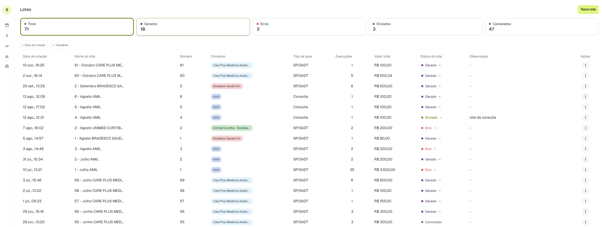
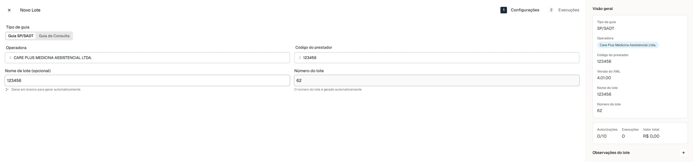
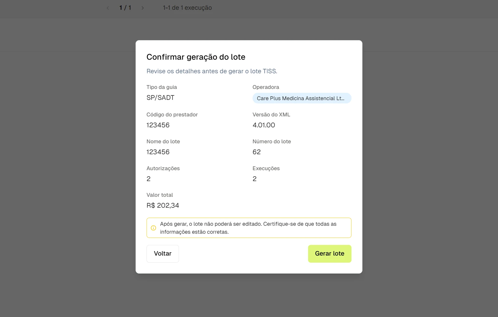
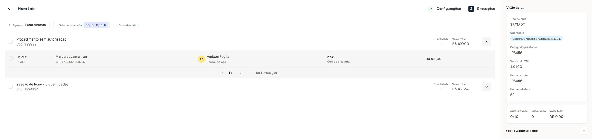
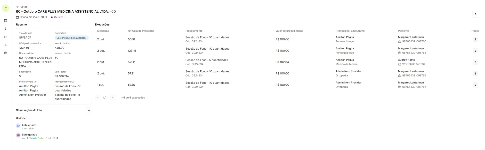
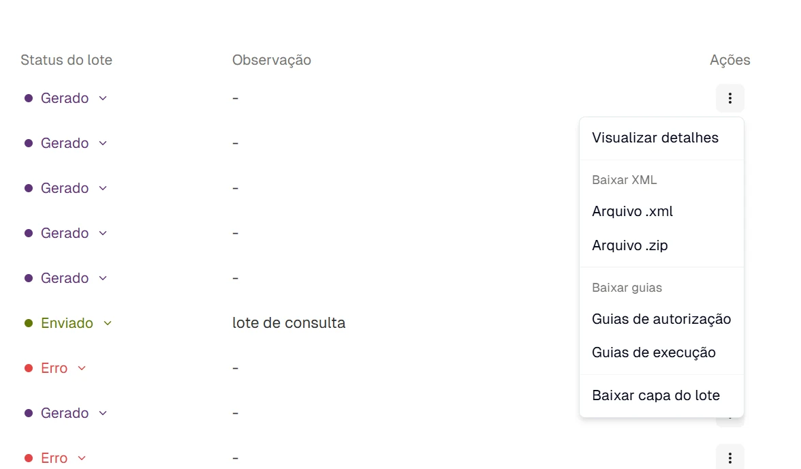
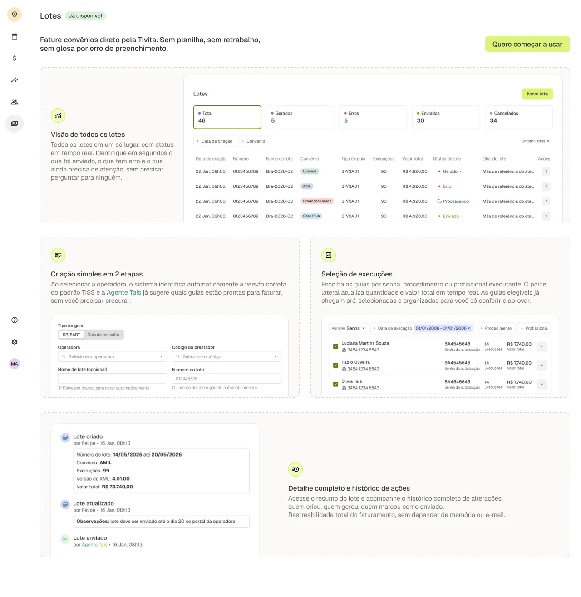

Tivita · Feature em produção
Lotes de convênio
Faturamento de convênio dentro da Tivita, do zero: de planilhas e portais manuais para um fluxo de criação de lote.
- Papel
- Discovery e design de produto, do zero
- Contexto
- Tivita, healthtech e fincare
- Entrega
- Lista de lotes, criação em duas etapas, detalhe com histórico e fake door
- Status
- Em produção

Contexto
O faturamento de convênio da Tivita era feito fora do produto. Cada clínica controlava tudo em várias planilhas e subia as guias manualmente no portal de cada operadora, um portal por convênio, e depois acompanhava o andamento de cada envio na mão.
Esta feature nasceu do zero. Fiz todo o discovery e o desenho dos fluxos, e ela hoje está em produção.
Discovery
Conversei com as principais clínicas de terapia ABA para entender como o faturamento acontecia na prática, e dois aprendizados guiaram o desenho.
O primeiro: não existe um dia certo para enviar um lote. Quando as guias executadas chegam a algo entre 80 e 90, a clínica fecha o lote. O fechamento acontece por volume, não por calendário.
O segundo: as clínicas não seguem um padrão. Cada uma organiza o trabalho de um jeito e adapta o processo à própria necessidade.
Criar um lote em duas etapas
A criação começa pela configuração: tipo de guia (SP/SADT ou consulta), operadora e código do prestador. O número do lote é gerado automaticamente, e o nome pode ficar em branco para o sistema nomear. A versão do XML aparece no painel lateral.
A segunda etapa é a escolha das execuções que entram no lote. Um painel lateral acompanha a escolha e mostra as autorizações, as execuções e o valor total, atualizados conforme as execuções são selecionadas.
Antes de gerar, um modal repete o resumo do lote e avisa que, depois de gerado, ele não pode ser editado.


Agrupar do jeito de cada clínica
Como cada clínica trabalha de um jeito, a seleção das execuções não impõe uma ordem. Quem monta o lote escolhe como ver a lista: agrupada por procedimento, por senha ou por profissional.
É o mesmo conjunto de execuções, organizado para o raciocínio de cada clínica. Os filtros de data de execução e de procedimento ajudam a chegar mais rápido ao que vai entrar no lote.

Acompanhar cada lote
Na tela inicial, os cards de status (gerados, com erro, enviados e cancelados) e os filtros por data de criação e convênio respondem à pergunta que antes exigia acompanhamento manual: o que já foi enviado e o que precisa de atenção.
Cada lote tem uma página de detalhe com o resumo, as execuções incluídas, as observações e um histórico das ações. Quando a ação foi feita pela Tais, a agente digital da Tivita, o histórico registra isso.
No menu de cada lote, é possível baixar o arquivo XML ou o .zip, as guias de autorização e de execução e a capa do lote.


Fake door antes do lançamento
Antes do lançamento, a feature teve um fake door: uma página de Lotes marcada como em breve, dentro do produto, com a proposta de valor e o botão Quero começar a usar, para coletar usuários interessados. Ela foi útil para selecionar os beta testers.

Próximo passo
Levei as telas em produção para o Figma para refinar uma segunda versão.
Todas as telas deste case são de uma conta de teste, com dados fictícios.
Contato
Gostou do que viu? Vamos conversar.